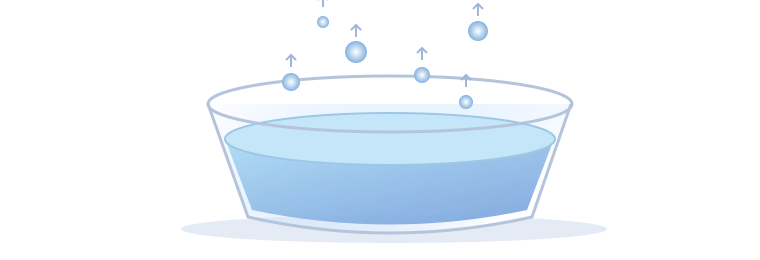

◉ 日常科学物质的变化 · 01 01从生活现象，理解水的变化水去了哪里，又是怎样回来的？ 认识两种相反的变化：蒸发与凝结 A液态 → 气态蒸发EVAPORATION 水由液态变成水蒸气 液态水变成气态的水蒸气。水没有沸腾，也可以发生蒸发。生活例子 晾着的衣服，会慢慢变干。 B气态 → 液态凝结CONDENSATION 水蒸气变成液态水 空气中的水蒸气可以变成液态水。冰水杯外壁上的水滴，就是一个例子。生活例子 冷饮杯外壁，会出现小水珠。 ✧抓住关键它们改变的是水的状态，方向正好相反。液态⇄气态